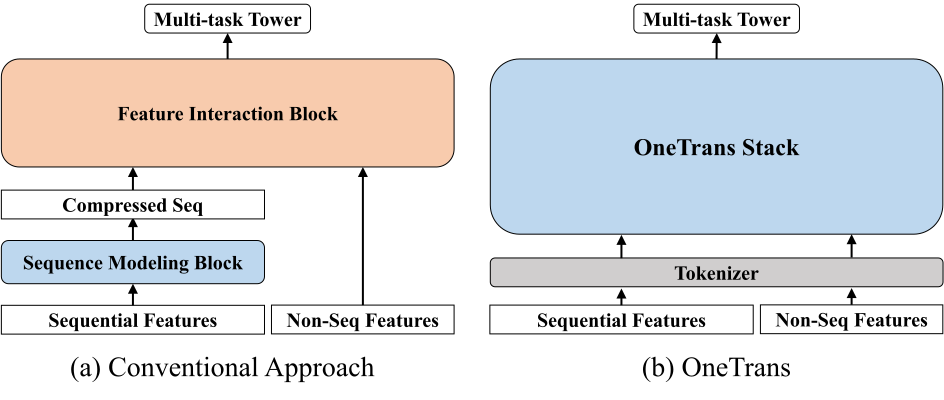
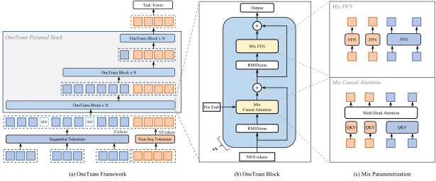
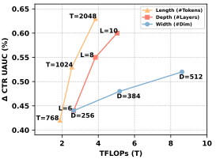
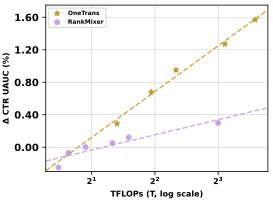

OneTrans：在工业推荐中使用一个 Transformer 统一特征交互与序列建模
摘要
在推荐系统中，扩大特征交互模块（例如 Wukong、RankMixer）或用户行为序列模块（例如 LONGER）的规模，已经取得了显著成效。然而，这些工作通常沿着彼此独立的路线推进，不仅阻碍了双向信息交换，也妨碍了统一优化与规模扩展。本文提出 OneTrans，一种同时进行用户行为序列建模和特征交互的统一 Transformer 骨干。OneTrans 使用统一 tokenizer，将序列与非序列属性转换为单一 token 序列。堆叠的 OneTrans 模块在相似的序列 token 之间共享参数，同时为非序列 token 分配 token 专属参数。通过因果注意力和跨请求 KV 缓存，OneTrans 能够预计算并缓存中间表示，显著降低训练与推理过程中的计算成本。工业规模数据集上的实验结果表明，OneTrans 能够随参数量增加而高效扩展，持续优于强基线，并在在线 A/B 测试中带来 5.68% 的人均 GMV 提升。
1. 引言

推荐系统（RecSys）在电子商务 (Zhou et al., 2018b; Feng et al., 2019)、流媒体 (Pancha et al., 2022; Chang et al., 2023; Xia et al., 2023)及社交网络 (Zhang et al., 2024; Zhai et al., 2024)等各类信息服务中发挥着基础性作用。 工业推荐系统通常采用级联排序架构 (Covington et al., 2016; Liu et al., 2017; Qin et al., 2022)。 首先，召回阶段从十亿级物品库中选出数百个候选 (Zhu et al., 2018; Huang et al., 2024)。随后，排序阶段 为每个候选打分，并返回排名前 的物品 (Wang et al., 2021; Gui et al., 2023; Xia et al., 2023; Zhang et al., 2024; Zhu et al., 2025)。 深度学习推荐模型（DLRM） (Naumov et al., 2019)被广泛用于工业推荐系统的排序阶段。
本文聚焦排序阶段，遵循 DLRM 风格的排序范式。 在排序任务中，主流方法围绕两个独立模块进行迭代： (a) 序列建模，利用局部注意力或 Transformer 编码器，将用户的多种行为序列编码为感知候选物品的表示 (Zhou et al., 2018b; Kang and McAuley, 2018; Sun et al., 2019; Chai et al., 2025)； 以及 (b) 特征交互，通过因子分解、显式交叉网络或特征组上的注意力，学习非序列特征（例如用户画像、物品画像和上下文）之间的高阶交叉 (Guo et al., 2018; Wang et al., 2021; Gui et al., 2023; Zhu et al., 2025)。 如图 1(a) 所示，这些方法通常先将用户行为编码为压缩后的序列表示，再将其与非序列特征拼接，并应用特征交互模块学习高阶交互；我们将这种设计称为先编码后交互流水线。
大语言模型（LLM）的成功表明，扩大模型规模（例如参数规模、训练数据规模）能够带来可预测的性能收益 (Kaplan et al., 2020)，这也启发了推荐系统领域的类似研究 (Zhang et al., 2024; Chai et al., 2025; Zhu et al., 2025)。 在特征交互方面， Wukong (Zhang et al., 2024) 将因子分解机模块与线性压缩相结合并堆叠，以捕获高阶特征交互，并建立了缩放定律；RankMixer (Zhu et al., 2025) 则通过硬件友好的 token 混合与 token 专属前馈网络（FFN），实现了良好的规模扩展。 在序列建模方面，LONGER(Chai et al., 2025) 将因果 Transformer 应用于较长的用户历史，并表明增大深度和宽度能够带来单调的性能提升。 尽管这些方法在实践中有效，但将序列建模与特征交互划分为独立模块，会引入两项主要局限。 首先，先编码后交互流水线限制了双向信息流，约束了静态特征和上下文特征影响序列表示的方式 (Zeng et al., 2024)。 其次，模块分离使执行过程割裂并增加延迟，而单一 Transformer 风格的骨干能够复用 KV 缓存、内存高效注意力和混合精度等 LLM 优化技术，从而更有效地扩展规模 (Gui et al., 2023)。
本文提出 OneTrans，一种采用统一 Transformer 骨干的创新架构范式，可联合进行用户行为序列建模与特征交互。 如图 1(b) 所示，OneTrans 在统一骨干内实现双向信息交换。它采用统一 tokenizer，将序列特征（多种行为序列）和非序列特征（静态用户/物品特征及上下文特征）转换为单一 token 序列，再交由以金字塔形式堆叠的 OneTrans 模块处理；这些模块是面向工业推荐系统定制的 Transformer 变体。 与 LLM 中仅来自文本的 token 不同，推荐系统的 token 来源多样。为适应这种差异，每个 OneTrans 模块都采用了类似 HiFormer (Gui et al., 2023) 的混合参数化方式。 具体而言，所有序列 token（来自序列特征）共享同一组 Q/K/V 和 FFN 权重，而每个非序列 token（来自非序列特征）均获得token 专属参数，以保留其独有语义。
与传统的先编码后交互框架不同，OneTrans 通过统一的因果 Transformer 骨干，消除了序列特征与非序列特征之间的架构壁垒。 这种表述使推荐系统的规模扩展与 LLM 实践保持一致：可以通过调整骨干的深度和宽度扩展整个模型，同时无缝继承成熟的 LLM 优化技术，例如 FlashAttention (Dao et al., 2022) 和混合精度训练 (Micikevicius et al., 2017)。 尤其是，跨候选与跨请求 KV 缓存 (Chai et al., 2025) 将时间复杂度从 降至 ，适用于包含 个候选物品的会话，使大规模部署 OneTrans 成为可能。
我们的主要贡献概括为以下四点： (1) 统一框架。 我们提出 OneTrans，一种用于排序的单一 Transformer 骨干，配备将序列与非序列特征编码为同一 token 序列的统一 tokenizer，以及联合执行序列建模和特征交互的统一 Transformer 模块。 (2) 面向推荐系统的定制。 为弥合 LLM 与推荐系统任务之间的差异，OneTrans 引入混合参数化方式，为不同来源的非序列 token 分配 token 专属参数，同时让所有序列 token 共享参数。 (3) 高效训练与在线服务。 我们通过逐步裁剪序列 token 的金字塔策略，以及跨候选复用用户侧计算的跨请求 KV 缓存来提高效率。此外，我们采用 FlashAttention、混合精度训练和半精度推理等 LLM 优化技术，进一步降低内存与计算开销。 (4) 规模扩展与部署。 随着模型规模增大，OneTrans 的性能呈现近似对数线性的提升，为真实生产数据中的缩放定律提供了证据。在在线部署中，它在保持生产级延迟的同时，对业务 KPI 带来了具有统计显著性的提升。
2. 相关工作

早期推荐系统，如 DIN (Zhou et al., 2018b) 及其会话感知变体 DSIN (Feng et al., 2019)，使用局部注意力学习以候选物品为条件的用户历史摘要，但它们会针对每个候选将行为压缩为固定长度向量，从而限制了长距离依赖建模 (Zhou et al., 2018a)。 SASRec (Kang and McAuley, 2018)、BERT4Rec (Sun et al., 2019) 和 BST (Chen et al., 2019) 等自注意力方法通过让每个位置关注完整历史来消除这一瓶颈，并利用双向掩码提高样本效率。 近年来，随着推荐系统中缩放定律 (Kaplan et al., 2020) 的研究不断深入，LONGER (Chai et al., 2025) 针对超长行为历史，采用高效注意力和便于在线服务的设计，将序列建模推向工业规模。 然而，在主流流水线中，这些序列编码器通常仍与特征交互堆叠相互独立，从而形成后期融合，而非与静态上下文特征进行联合优化 (Zeng et al., 2024)。
在特征交互方面，早期推荐系统依赖人工设计的交叉特征或自动乘性交互层。 Wide&Deep (Cheng et al., 2016)、FM/DeepFM (Chang et al., 2010; Guo et al., 2018) 和 DCN/DCNv2 (Wang et al., 2017, 2021) 等经典模型能够高效地实现低阶或阶数有界的交互。然而，近期的规模扩展研究发现 (Zhang et al., 2024)，当模型堆叠了足够多的交叉层后，继续增加层数便不再有益：模型质量趋于平台期，而非持续改善。 为克服预设交叉形式的僵化限制，基于注意力的方法会自动学习高阶交互。 AutoInt (Song et al., 2019) 学习任意阶关系，HiFormer (Gui et al., 2023) 则引入组专属投影，以更好地捕获异构、非对称的交互。 随着规模扩展越来越多地用于特征交互模块，Wukong (Zhang et al., 2024) 等大规模系统通过堆叠 FM 风格的交互模块并结合线性压缩，展示了可预测的收益， 而 RankMixer (Zhu et al., 2025) 则在严格的延迟预算下，通过并行 token 混合与稀疏 MoE 实现良好的规模扩展。 然而，这些交互模块通常仍遵循交互范式，将交互放在单独阶段，从而阻碍了与用户序列建模的统一优化 (Zeng et al., 2024)。
迄今为止，推荐系统的进展主要沿着序列建模和特征交互两条独立路线推进。 InterFormer (Zeng et al., 2024) 尝试通过基于摘要的双向交叉架构弥合这一差距，使两个组件能够相互交换信号。然而，它仍将两者保留为独立模块，而且交叉架构同时引入了架构复杂性和执行过程的割裂。缺少用于联合建模与优化的统一骨干，使得将系统作为一个整体进行规模扩展仍然面临挑战。
近期关于生成式推荐器（GR）的工作，将推荐表述为序列转导任务，并提出了 HSTU (Zhai et al., 2024) 等高效的长上下文骨干。这条路线与依赖丰富非序列（NS）特征的 DLRM 路线互为补充。
3. 方法
在详细介绍我们的方法之前，先简要说明任务设定。 在级联工业推荐系统中，召回阶段每次都会为用户 返回一个候选集（通常包含数百个候选物品）。随后，排序模型为每个候选物品 预测一个分数：
| (1) |
其中， 是从用户、候选物品和上下文中获得的一组非序列特征； 是用户的一组历史行为序列； 为可训练参数。常见的任务预测包括点击率（CTR）和点击后转化率（CVR）。
| (2) | ||||
3.1. OneTrans 框架概览
如图 2(a) 所示，OneTrans 采用统一 tokenizer，将序列特征 映射为 S-token，将非序列特征 映射为 NS-token。随后，金字塔堆叠的 Transformer 在单一计算图中联合处理这一统一 token 序列。 我们将初始 token 序列记为
| (3) |
该 token 序列由 个 S-token 与 个 NS-token 拼接而成，所有 token 的维度均为 。需要注意的是，S-token 中包含可学习的 [SEP] token，用于标识不同类型用户行为序列之间的边界。 如图 2(b) 所示，每个 OneTrans 模块通过以下操作逐步更新 token 状态：
| (4) | ||||
| (5) |
其中，（混合多头注意力）与 （混合前馈网络）采用混合参数化策略（见图 2(c)），在注意力层和前馈层中均让序列 token 共享权重，同时为非序列 token 分配独立参数。
统一的因果掩码施加自回归约束，将每个位置的注意力限制在此前的 token 上。具体而言，NS-token 可以关注 S-token 的完整历史，从而实现全面的跨 token 交互。通过堆叠这些模块，并对 S-token 应用金字塔式尾部截取，模型逐步将紧凑的高阶信息蒸馏到 NS-token 中。最后，将最终 token 状态传递给任务专属预测头进行预测。
通过将非序列和序列特征统一为同一 token 序列，并使用因果 Transformer 对其建模，OneTrans 改变了传统的先编码后交互流水线。这种统一设计自然地支持 (i) 每个行为序列内部的序列内交互， (ii) 多个序列之间的跨序列交互， (iii) 物品、用户和上下文特征之间的多源特征交互，以及 (iv) 序列—特征交互，且全部位于单一 Transformer 堆叠中。
统一表述使我们能够无缝继承成熟的 LLM 工程优化技术，包括 KV 缓存和内存高效注意力，从而显著降低推理延迟。我们认为，这种统一表述非常适合以单一、可扩展的架构处理多序列和跨域推荐挑战。下面详细介绍其设计。
3.2. 特征与 token 化
为构造初始 token 序列 ，OneTrans 首先应用特征预处理流水线，将所有原始特征输入映射为嵌入向量。随后，将这些嵌入划分为 (i) 多行为序列子集，以及 (ii) 表示用户、物品或上下文特征的非序列子集，并分别对每个子集应用 tokenizer。
3.2.1. 非序列 token 化
非序列特征 包括数值输入（例如价格、CTR）和类别输入（例如用户 ID、物品类别）。所有特征先进行分桶或独热编码，再映射为嵌入。由于工业系统通常涉及数百个重要性不同的特征，为控制非序列 token 的数量（记为 ），可以采用以下两种方案：
分组 tokenizer （与 RankMixer (Zhu et al., 2025) 一致）。 将特征人工划分为语义组 。每个组内的特征拼接后，传入该组专属的 MLP：
| (6) |
自动切分 tokenizer。 另一种方案是将所有特征拼接后，通过单个 MLP 进行一次投影，再进行切分：
| (7) |
自动切分 tokenizer 使用单次稠密投影，与分组方案相比能够减少内核启动开销。我们将在实验中评估这两种方案。
最终，非序列 token 化得到 个非序列 token，每个 token 的维度均为 。
3.2.2. 序列 token 化
OneTrans 接受的多行为序列表示为
| (8) |
每个序列 由 个事件嵌入 构成，这些嵌入通过拼接物品 ID 及其对应的辅助信息（如物品类别和价格）得到。
多行为序列的原始维度可能各不相同。因此，对于每个序列 ，我们使用一个共享投影 ，将其中所有事件 转换到共同维度 ：
| (9) |
对齐后的序列 按照以下两种规则之一合并为单一 token 序列：1) 时间戳感知：按时间将所有事件交错排列，并附带序列类型标识；2) 时间戳无关：按事件影响力拼接序列，例如购买 加购 点击，并在序列之间插入可学习的 [SEP] token。在后一种规则中，用户意图更强的行为被放在序列较前的位置。 消融结果表明，在时间戳可用时，时间戳感知规则优于按影响力排序的替代方案。 形式化地，有：
| (10) |
3.3. OneTrans 模块
如图 2(b) 所示，每个 OneTrans 模块都是作用于归一化 token 序列的前置归一化因果 Transformer：序列先包含 个序列 S-token，再包含 个非序列 NS-token。 受异构特征组相关研究结果的启发 (Gui et al., 2023)，我们对 Transformer 做了轻量修改，以支持混合参数方案，见图 2(c)。具体而言，同质的 S-token 共享一组参数；而 NS-token 在来源和语义上具有异构性，因此分别使用 token 专属参数。
与 LLM 输入不同，推荐系统的 token 序列将序列 S-token 与多种 NS-token 组合在一起，而它们的取值范围和统计特征差异显著。这些差异可能使后置归一化设置出现注意力坍塌和训练不稳定。为避免这一问题，我们对所有 token 应用 RMSNorm (Zhang and Sennrich, 2019) 进行前置归一化，以对齐不同 token 类型的尺度并稳定优化过程。
3.3.1. 混合（共享/token 专属）因果注意力
OneTrans 采用带因果注意力掩码的标准多头注意力（MHA）；唯一的变化在于 Q/K/V 的参数化方式。 设 为第 个 token。 为计算 Q/K/V，我们对 S-token（）使用共享投影，并使用 个token 专属投影处理 NS-token（）：
| (11) |
其中，（）遵循混合参数化方案：
| (12) |
注意力使用标准的因果掩码，NS-token 放在 S-token 之后。这带来以下作用： (1) S 侧。 每个 S-token 仅关注此前的 位置。对于时间戳感知序列，每个事件均以其历史为条件；对于时间戳无关序列（按意图排序，例如购买 加购 点击/曝光），因果掩码使高意图信号能够为后续低意图行为提供信息并进行筛选。 (2) NS 侧。 每个 NS-token 关注完整的 历史，实际上相当于通过目标注意力聚合序列证据，同时关注此前的 NS-token，从而增加 token 级交互的多样性。 (3) 支持金字塔结构。 在 S 侧与 NS 侧，因果掩码均将信息逐步集中到靠后的位置，自然支持逐层裁剪 token 的金字塔调度，后文将详细介绍。
3.3.2. 混合（共享/token 专属）FFN
类似地，前馈网络遵循相同的参数化策略：NS-token 使用 token 专属 FFN，S-token 使用共享 FFN，
| (13) |
其中， 和 遵循公式 (12) 的混合参数化方式，即在 时共享参数，在 时使用 token 专属参数。
综上，与标准因果 Transformer 相比，OneTrans 仅改变了参数化方式：NS-token 使用token 专属的 QKV 和 FFN，S-token 则共享同一组参数。单一因果掩码将序列连接起来，使 NS-token 能够聚合完整行为历史，同时保持高效的 Transformer 风格计算。
3.4. 金字塔堆叠
如第 3.3 节所述，因果掩码会将信息集中到靠后的位置。 利用这种偏向较近位置的结构，我们采用金字塔调度：在每一层 OneTrans 模块中，仅由最近的一部分 S-token 发出查询，但键和值仍针对完整序列计算；查询集合随深度增加而缩小。
设 为输入 token 列表， 为尾部索引集合，其中 。 按照公式 12，我们将查询修改为 ：
| (14) |
而键和值仍按通常方式在完整序列 上计算。 注意力计算后，仅保留 的输出，将 token 长度缩减到 ，从而在各层之间形成金字塔层级结构。
这一设计带来两项益处： (i) 渐进式蒸馏：将较长的行为历史汇聚到少量尾部查询中，使模型容量聚焦于信息量最大的事件，并将信息整合进 NS-token；以及 (ii) 计算效率：注意力成本变为 ，FFN 的成本则随 线性变化。缩小查询集合会直接减少 FLOPs 和激活内存。
3.5. 训练与部署优化
3.5.1. 跨请求 KV 缓存
在工业推荐系统中，无论训练还是在线服务，来自同一请求的样本都会连续处理：不同候选的 S-token 保持一致，而 NS-token 随候选物品变化。利用这一结构，我们将广泛使用的 KV 缓存 (Chai et al., 2025) 集成到 OneTrans 中，形成统一的两阶段范式。
阶段 I（S 侧，每个请求一次）。 使用因果掩码处理全部 S-token，并缓存其键值对和注意力输出。该阶段在每个请求中仅执行一次。
阶段 II（NS 侧，每个候选一次）。 对每个候选，计算其 NS-token，并对缓存的 S 侧键和值执行交叉注意力，随后通过 token 专属 FFN 层。特别地，候选专属序列（例如 SIM (Pi et al., 2020)）由于无法复用共享的 S 侧缓存，会先通过池化预聚合到 NS-token 中。
KV 缓存将 S 侧计算成本分摊到多个候选上，使每个候选的计算保持轻量，并消除重复计算，从而显著提高吞吐量。
由于用户行为序列仅追加新行为，我们将 KV 缓存扩展到跨请求复用：每个新请求复用此前的缓存，仅对新增行为计算增量键和值。 这将每个请求的序列计算成本从 降至 ，其中 为自上次请求以来新增的行为数量。
3.5.2. 统一的 LLM 优化。
4. 实验
通过离线评估和在线测试，我们旨在回答以下研究问题（RQ）： RQ1：统一堆叠与 先编码后交互。 在计算量相当的条件下，单一 Transformer 堆叠能否带来稳定的性能提升？ RQ2：哪些设计选择至关重要？ 我们对输入层（例如 tokenizer、序列融合）和OneTrans 模块（例如参数共享、注意力类型、金字塔堆叠）进行消融，以评估不同设计选择对性能和效率的重要性。 RQ3：系统效率。在相同的 OneTrans 计算图下，金字塔堆叠、跨请求 KV 缓存、FlashAttention-2，以及结合重计算的混合精度，能否降低 FLOPs、显存占用和延迟？ RQ4：缩放定律。 当我们扩展长度（token 序列长度）、宽度（）和深度（层数）时，损失与性能是否表现出预期的对数线性趋势？ RQ5：在线 A/B 测试。在生产环境延迟约束下，将 OneTrans 部署上线能否使关键业务指标（例如 order/u、GMV/u）获得统计显著的提升？
4.1. 实验设置
4.1.1. 数据集
| Metric | Value |
|---|---|
| # Impressions (samples) | 29.1B |
| # Users (unique) | 27.9M |
| # Items (unique) | 10.2M |
| Daily impressions (mean std) | 118.2M 14.3M |
| Daily active users (mean std) | 2.3M 0.3M |
在离线评估中，我们使用严格遵守隐私规定的生产日志，在大规模工业排序场景中评估 OneTrans（所有可识别个人身份的信息均经过匿名化和哈希处理）。数据按时间顺序划分，所有特征均使用曝光时刻的快照，以防止时间信息泄漏并确保线上与线下一致。标签（例如点击和订单）在与生产配置一致的固定窗口内聚合。表 1 汇总了数据集统计信息。
| Type | Model | CTR | CVR (order) | Efficiency | |||
| AUC | UAUC | AUC | UAUC | Params (M) | TFLOPs | ||
| (1) Base model | DCNv2 + DIN (base)* | 0.79623 | 0.71927 | 0.90361 | 0.71955 | 10 | 0.06 |
| (2) Feature-interaction | Wukong + DIN | +0.08% | +0.11% | +0.14% | +0.11% | 28 | 0.54 |
| HiFormer + DIN | +0.11% | +0.18% | +0.23% | -0.20% | 108 | 1.35 | |
| RankMixer + DIN* | +0.27% | +0.36% | +0.43% | +0.19% | 107 | 1.31 | |
| (3) Sequence-modeling | RankMixer + StackDIN | +0.40% | +0.37% | +0.63% | -1.28% | 108 | 1.43 |
| RankMixer + LONGER | +0.49% | +0.59% | +0.47% | +0.44% | 109 | 1.87 | |
| RankMixer + Transformer* | +0.57% | +0.90% | +0.52% | +0.75% | 109 | 2.51 | |
| (4) Unified framework | OneTransS* | +1.13% | +1.77% | +0.90% | +1.66% | 91 | 2.64 |
| OneTransL (default)* | +1.53% | +2.79% | +1.14% | +3.23% | 330 | 8.62 | |
4.1.2. 任务与指标
我们评估式 (2) 定义的两个二分类排序任务：CTR 和 CVR。性能通过 AUC 和 UAUC（按曝光量加权的用户级 AUC）衡量。
下一批次评估。 数据按时间顺序处理。对于每个小批次，我们先 (i) 在评估模式下记录预测结果，再 (ii) 使用同一批次进行训练。AUC 和 UAUC 根据每天的预测结果逐日计算，最后在各天之间取宏平均。
效率指标。 我们报告参数量（Params）（不包含稀疏嵌入的模型参数）和 TFLOPs（批大小为 2048 时，以 TFLOPs 计量的训练计算量）。
4.1.3. 基线
我们在使用相同特征且计算预算匹配的条件下，构建工业界标准的模型组合作为基线。在先编码后交互范式下，我们从广泛使用的生产基线 DCNv2+DIN (Wang et al., 2021; Zhou et al., 2018b) 出发，逐步增强特征交互模块：DCNv2 Wukong (Zhang et al., 2024) HiFormer (Gui et al., 2023) RankMixer (Zhu et al., 2025)。 固定 RankMixer 后，我们进一步改变序列建模模块：StackDIN Transformer (Chen et al., 2019) LONGER (Chai et al., 2025)。
4.1.4. 超参数设置。
我们报告两种配置： OneTransS 使用 6 个堆叠的 OneTrans 模块，宽度为 ，注意力头数为 ，目标参数量为 M。 OneTransL 扩展至 8 层，宽度为 。
输入由统一 tokenizer 处理（对多行为序列采用时间戳感知融合；对非序列特征采用 Auto-Split），并使用启发式金字塔调度，在各层将序列查询 token 数量从 1190 线性缩减至 12（OneTransS），或从 1500 缩减至 16（OneTransL）。具体而言，我们沿各层线性减少序列查询 token 数量，将每层 token 数量取整至最接近的 32 的倍数，并使顶层数量与非序列 token 数量相同。
优化与基础设施。 我们采用不使用权重衰减的双优化器策略：稀疏嵌入使用 Adagrad 优化（、），稠密参数使用 RMSProp 优化（lr、alpha、momentum）。 我们采用大规模 Transformer 训练中常用的稳定化技术，包括 Pre-Norm (Xiong et al., 2020) 和全局梯度范数裁剪 (Shoeybi et al., 2019)。 训练时每块 GPU 的批大小设为 2048，稠密层和稀疏层的梯度裁剪阈值分别为 90 和 120。在线推理时，我们将每块 GPU 的批大小减小至 100，以平衡吞吐量与延迟。 训练在 16 块 H100 GPU 上采用数据并行 all-reduce。
4.2. RQ1：性能评估
我们以本场景在规模扩展前的生产基线 DCNv2+DIN 作为比较基准（表 2）。在先编码后交互范式下，独立扩展任一组件均有益：升级特征交互模块（DCNv2 Wukong HiFormer RankMixer）或序列建模模块（StackDIN Transformer LONGER），均能使 CTR AUC/UAUC 和 CVR AUC 获得稳定提升。在我们的系统中，这些指标超过 的提升被认为具有实际意义，而超过 的提升通常对应在线 A/B 测试中具有统计显著性的效果。不过，由于每个用户的样本量较少、波动较大，我们对 CVR UAUC 持谨慎态度。
转向统一设计后，OneTransS 相比基线的提升达到 （CTR AUC/UAUC）和 （CVR AUC/UAUC）。 在参数规模相当的情况下，它在训练 FLOPs 相近（2.64T 与 2.51T）的条件下也优于 RankMixer+Transformer，体现了统一建模的优势。 进一步扩展后，OneTransL 获得了最佳的整体提升：（CTR AUC/UAUC）和 （CVR AUC/UAUC），表明模型容量增长时，质量表现具有可预测性。
综上，将序列建模和特征交互统一到单个 Transformer 中，比独立扩展任一组件带来更可靠、计算效率更高的提升。
4.3. RQ2：通过消融研究评估设计选择
| Type | Variant | CTR | CVR (order) | Efficiency | |||
|---|---|---|---|---|---|---|---|
| AUC | UAUC | AUC | UAUC | Params (M) | TFLOPs | ||
| Input | Group-wise Tokenzier | -0.10% | -0.30% | -0.12% | -0.10% | 78 | 2.35 |
| Timestamp-agnostic Fusion | -0.09% | -0.22% | -0.20% | -0.21% | 91 | 2.64 | |
| Timestamp-agnostic Fusion w/o Sep Tokens | -0.13% | -0.32% | -0.29% | -0.33% | 91 | 2.62 | |
| OneTrans Block | Shared parameters | -0.15% | -0.29% | -0.14% | -0.29% | 24 | 2.64 |
| Full attention | +0.00% | +0.01% | -0.03% | +0.06% | 91 | 2.64 | |
| w/o pyramid stack | -0.05% | +0.06% | -0.04% | -0.42% | 92 | 8.08 | |


我们对提出的 OneTrans 模型进行消融研究，以量化关键设计选择的贡献。完整结果汇总于表 3。我们评估以下变体： 输入变体： i) 将自动切分 tokenizer（Auto-Split Tokenizer）替换为分组 tokenizer（Group-wise Tokenizer）（第 1 行）； ii) 使用时间戳无关的融合策略，替代时间戳感知序列融合（第 2 行）； iii) 移除时间戳感知序列融合中的 [SEP] token（第 3 行）； OneTrans 模块变体： i) 在所有 token 之间共享一套 Q/K/V 和 FFN 参数，而不是为 NS-token 分配独立参数（第 4 行）； ii) 将因果注意力替换为全注意力（第 5 行）； iii) 在所有层保留完整 token 序列，从而禁用金字塔堆叠（第 6 行）。
总的来说，消融结果表明： 1) 自动切分 tokenizer（Auto-Split Tokenizer）相比手动将非序列特征分组为 token 具有明显优势，说明让模型自动构建非序列 token 比依赖人工定义的特征分组更有效； 2) 存在时间戳时，时间戳感知融合优于基于意图的排序，说明应优先考虑时间顺序，而非事件的影响程度； 3) 在时间戳无关融合下，可学习的 [SEP] token有助于模型区分不同序列； 4) 为 NS-token 配置的token 专属参数优于共享投影，能够更好地区分特征； 5) 因果注意力与全注意力的性能相近，但全注意力会使 KV 缓存等标准优化无法使用； 6) 在所有层保留全长 token 并无益处：OneTrans 能有效地将信息汇总至较短的尾部，因此金字塔设计可以安全地裁剪查询以节省计算。此外，在固定 TFLOPs 预算下，相比全长设计，金字塔设计支持接近 的序列长度，从而更充分地利用序列扩展带来的收益。
4.4. RQ3：系统效率
| Variant | Training | Inference | ||
|---|---|---|---|---|
| Runtime (ms) | Memory (GB) | Latency (p99; ms) | Memory (GB) | |
| Unoptimized OneTransS | 407 | 53.13 | 54.00 | 1.70 |
| + Pyramid stack | ||||
| + Cross-Request KV Caching | ||||
| + FlashAttention | ||||
| + Mixed Precision with Recomputation | ||||
如表所示，(i) 金字塔堆叠通过裁剪序列查询 token，同时降低训练成本（运行时间、显存）与在线服务开销（p99 延迟、显存）；(ii) 跨请求 KV 缓存消除重复的序列计算，持续改善训练与在线服务中的运行时间、延迟和显存占用；(iii) FlashAttention带来显著的训练收益，同时适度改善在线服务；(iv) 结合重计算的混合精度带来最大的在线服务收益（p99 延迟与推理显存），同时也提高训练效率。
这些结果表明 LLM 优化技术在大规模推荐中是有效的。 基于这些结果，我们将模型扩展为 OneTransL，并表明其在线效率可与小得多的 DCNv2+DIN 基线相当（表 5），这凸显了统一 Transformer 骨干能够直接采用 LLM 优化技术。
4.5. RQ4：缩放定律验证
| Metric | DCNv2+DIN | OneTransL |
|---|---|---|
| TFLOPs | 0.06 | 8.62 |
| Params (M) | 10 | 330 |
| MFU | 13.4 | 30.8 |
| Inference Latency (p99, ms) | 13.6 | 13.2 |
| Training Memory (GB) | 20 | 32 |
| Inference Memory (GB) | 1.8 | 0.8 |
我们沿三个维度考察 OneTrans 的缩放定律： (1) 长度——输入 token 序列长度， (2) 深度——堆叠模块的数量，以及 (3) 宽度——隐状态维度。
如图 3(a) 所示，增加长度通过引入更多行为证据带来最大的收益。 在深度与宽度之间，我们观察到明确的权衡：增加深度通常比单纯扩展宽度带来更大的性能提升，因为更深的堆叠能够提取更高阶的交互和更丰富的抽象。 然而，更深的模型也会增加串行计算，而扩宽更有利于并行。因此，在深度与宽度之间选择时，应在目标硬件预算下平衡性能收益与系统效率。
我们进一步通过同时加宽和加深 OneTrans 分析缩放定律行为；作为对照，我们在 RankMixer 侧将 RankMixer+Transformer 基线扩展至 1B，然后在对数尺度上绘制 UAUC 与训练 FLOPs 的关系。 如图 3(b) 所示，OneTrans 和 RankMixer 均呈现出清晰的对数线性趋势，但 OneTrans 的斜率更陡，可能是因为以 RankMixer 为中心的规模扩展缺少统一骨干，且其基于 MoE 的扩展主要增加 FFN 的隐层维度。 综合来看，这些结果表明 OneTrans 具有更高的参数效率与计算效率，为工业部署提供了有利的性能与计算量权衡。
尽管我们能够在严格的在线 p99 延迟约束下部署 OneTransL，但大幅超出这一规模的扩展仍受在线效率限制，我们将进一步的系统与模型联合优化留待未来工作。
4.6. RQ5：在线 A/B 测试
我们在两个大规模工业场景中评估 OneTrans 对业务的影响：(i) Feeds（首页信息流）和 (ii) Mall（包含 Feeds 及其他子场景的整体场景）。 流量在用户或账号级别通过哈希和用户级随机化进行划分。对照组与实验组模型均使用过去 1.5 年的生产数据进行训练和部署，以确保公平比较。
先前的生产基线 RankMixer+Transformer 作为对照组（M 神经网络参数），且不使用序列 KV 缓存。实验组部署 OneTransL，并采用第 3.5 节所述的在线服务优化。
我们报告用户级 click/u、order/u 和 gmv/u 相对于 RankMixer+Transformer 对照组的相对变化（），并给出双侧 95% 置信区间（采用用户级分层 bootstrap）；同时报告端到端延迟，其定义为从请求到达到响应发出之间，单次曝光耗时 p99 的相对变化（；越低越好）。 如表 6 所示，OneTransL 带来了稳定的收益。在 Feeds 场景中，click/u 提升 ，order/u 提升 ，gmv/u 提升 ，延迟变化为 。在 Mall 场景中，click/u 提升 ，order/u 提升 ，gmv/u 提升 ，延迟变化为 。这些结果表明，相比强大的非统一基线，统一建模框架能够在改善业务指标的同时缩短在线服务时间。
我们还观察到用户活跃天数增加 ，冷启动商品 order/u显著提升 ，凸显了所提出模型较强的泛化能力。
| Scenario | click/u | order/u | gmv/u | Latency ( ) |
|---|---|---|---|---|
| Feeds | ** | * | * | |
| Mall | ** | ** | * |
5. 结论
我们提出 OneTrans，一种用于个性化排序的统一 Transformer 骨干，以替代传统的先编码–后–交互范式。 统一 tokenizer 将序列属性和非序列属性转换为同一 token 序列；统一 Transformer 模块对同质（序列）token 使用共享参数，对异质（非序列）token 使用 token 专属参数，从而联合执行序列建模与特征交互。 为使统一堆叠在大规模下高效运行，我们采用逐步裁剪序列 token 的金字塔调度，以及复用用户侧计算的跨请求 KV 缓存；该设计还受益于 LLM 风格的系统优化（例如 FlashAttention、混合精度）。 在大规模评估中，OneTrans 随宽度和深度增加表现出接近对数线性的性能收益，并在保持生产级延迟的同时，带来具有统计显著性的业务提升。 我们认为，这一统一设计为扩展推荐系统规模提供了一条实用途径，同时可以复用推动近期 LLM 进展的系统优化技术。
参考文献
- LONGER: scaling up long sequence modeling in industrial recommenders. arXiv preprint arXiv:2505.04421. Cited by: §1, §1, §1, §2, §3.5.1, §4.1.3.
- Pepnet: parameter and embedding personalized network for infusing with personalized prior information. In Proceedings of the 29th ACM SIGKDD Conference on Knowledge Discovery and Data Mining, pp. 3795–3804. Cited by: §1.
- Training and testing low-degree polynomial data mappings via linear svm.. Journal of Machine Learning Research 11 (4). Cited by: §2.
- Behavior sequence transformer for e-commerce recommendation in alibaba. External Links: 1905.06874, Link Cited by: §2, §4.1.3.
- Wide & deep learning for recommender systems. External Links: 1606.07792, Link Cited by: §2.
- Deep neural networks for youtube recommendations. In Proceedings of the 10th ACM conference on recommender systems, pp. 191–198. Cited by: §1.
- Flashattention: fast and memory-efficient exact attention with io-awareness. Advances in neural information processing systems 35, pp. 16344–16359. Cited by: §1.
- FlashAttention-2: faster attention with better parallelism and work partitioning. arXiv preprint arXiv:2307.08691. Cited by: §3.5.2.
- Deep session interest network for click-through rate prediction. External Links: 1905.06482, Link Cited by: §1, §2.
- Memory-efficient backpropagation through time. In Advances in Neural Information Processing Systems (NeurIPS), Cited by: §3.5.2.
- Hiformer: heterogeneous feature interactions learning with transformers for recommender systems. External Links: 2311.05884, Link Cited by: §1, §1, §1, §1, §2, §3.3, §4.1.3.
- DeepFM: an end-to-end wide & deep learning framework for ctr prediction. External Links: 1804.04950, Link Cited by: §1, §2.
- A comprehensive survey on retrieval methods in recommender systems. arXiv preprint arXiv:2407.21022. Cited by: §1.
- Self-attentive sequential recommendation. External Links: 1808.09781, Link Cited by: §1, §2.
- Scaling laws for neural language models. arXiv preprint arXiv:2001.08361. Cited by: §1, §2.
- Cascade ranking for operational e-commerce search. In Proceedings of the 23rd ACM SIGKDD International Conference on Knowledge Discovery and Data Mining, pp. 1557–1565. Cited by: §1.
- Mixed precision training. In International Conference on Learning Representations (ICLR), Cited by: §3.5.2.
- Mixed precision training. arXiv preprint arXiv:1710.03740. Cited by: §1.
- Deep learning recommendation model for personalization and recommendation systems. arXiv preprint arXiv:1906.00091. Cited by: §1.
- Pinnerformer: sequence modeling for user representation at pinterest. In Proceedings of the 28th ACM SIGKDD conference on knowledge discovery and data mining, pp. 3702–3712. Cited by: §1.
- Search-based user interest modeling with lifelong sequential behavior data for click-through rate prediction. In Proceedings of the 29th ACM International Conference on Information & Knowledge Management, pp. 2685–2692. Cited by: §3.5.1.
- Rankflow: joint optimization of multi-stage cascade ranking systems as flows. In Proceedings of the 45th International ACM SIGIR Conference on Research and Development in Information Retrieval, pp. 814–824. Cited by: §1.
- Megatron-lm: training multi-billion parameter language models using model parallelism. arXiv preprint arXiv:1909.08053. Cited by: §4.1.4.
- AutoInt: automatic feature interaction learning via self-attentive neural networks. In Proceedings of the 28th ACM International Conference on Information and Knowledge Management, CIKM ’19, pp. 1161–1170. External Links: Link, Document Cited by: §2.
- BERT4Rec: sequential recommendation with bidirectional encoder representations from transformer. External Links: 1904.06690, Link Cited by: §1, §2.
- Deep & cross network for ad click predictions. External Links: 1708.05123, Link Cited by: §2.
- DCN v2: improved deep & cross network and practical lessons for web-scale learning to rank systems. In Proceedings of the Web Conference 2021, WWW ’21, pp. 1785–1797. External Links: Link, Document Cited by: §1, §1, §2, §4.1.3.
- Transact: transformer-based realtime user action model for recommendation at pinterest. In Proceedings of the 29th ACM SIGKDD Conference on Knowledge Discovery and Data Mining, pp. 5249–5259. Cited by: §1.
- On layer normalization in the transformer architecture. In International conference on machine learning, pp. 10524–10533. Cited by: §4.1.4.
- Interformer: towards effective heterogeneous interaction learning for click-through rate prediction. arXiv preprint arXiv:2411.09852. Cited by: §1, §2, §2, §2.
- Actions speak louder than words: trillion-parameter sequential transducers for generative recommendations. arXiv preprint arXiv:2402.17152. Cited by: §1, §2.
- Root mean square layer normalization. Advances in neural information processing systems 32. Cited by: §3.3.
- Wukong: towards a scaling law for large-scale recommendation. arXiv preprint arXiv:2403.02545. Cited by: §1, §1, §2, §4.1.3.
- Deep interest evolution network for click-through rate prediction. External Links: 1809.03672, Link Cited by: §2.
- Deep interest network for click-through rate prediction. External Links: 1706.06978, Link Cited by: §1, §1, §2, §4.1.3.
- Learning tree-based deep model for recommender systems. In Proceedings of the 24th ACM SIGKDD international conference on knowledge discovery & data mining, pp. 1079–1088. Cited by: §1.
- RankMixer: scaling up ranking models in industrial recommenders. External Links: 2507.15551, Link Cited by: §1, §1, §1, §2, §3.2.1, §4.1.3.